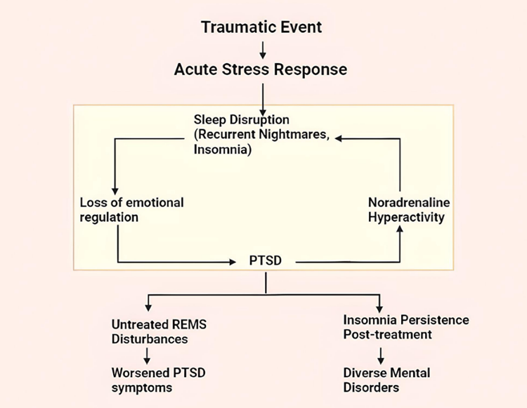

Introduction
Research Domain
Clinical Neuroscience
Motivation
Around 70% of people worldwide experience a potentially traumatic event, but only 5.6% develop PTSD. Overall, an estimated 3.9% of the global population has had PTSD, and up to 40% recover within one year. Despite its prevalence, PTSD assessment and treatment often face major delays: fewer than 10% of affected individuals receive treatment in the first year, the average time to treatment initiation can reach 4.5 years, and in some settings the median delay to specialist care is as high as 12 years. This insight highlighted the urgent need for precise, actionable assessment methods - leading us to double-down on significant research in REMS as a potential biomarker. Sleep disturbances constitute an important feature of PTSD, viewed primarily in form of insomnia and nightmares. In fact, the vitality of sleep in maintaining our sense of wellbeing has made it conceivable that sleep deprivation is itself a stressor to human bodies and should relate to stress system activation. Research has also described sleep disturbance as a predisposing, precipitating and perpetuating component in the clinical course of PTSD. Sleep is classified as either rapid eye movement sleep (REMS) or non-REMS. For practical reasons, most experimental research has been undertaken by causing REMS loss. It has been demonstrated that withdrawal of noradrenaline (NA) is required for the formation of REMS. Furthermore, when REMS is lost, NA levels rise in the brain, and this higher NA is responsible for many of the sleep loss-related symptoms. The purpose of this review is 1) to recapitulate the available evidence that links sleep disturbances in PTSD in a complex multidirectional relationship, 2) to emphasize the critical role of noradrenaline in mediating REMS-loss associated PTSD outcomes, and 3) to provide a foundation for developing scalable, translational frameworks for PTSD assessment in clinical and research settings.
For access to the full research article, please contact the co-authors.
Approach
Phase 1: From late-May to August of 2022, I conducted a preliminary study on dimensional approaches to measure sleep characteristics. Guided by Dr. Vijay Kumar at AINN, I critically read 40+ scientific articles and reports on links between sleep disturbances and PTSD and prepared a 10-page analysis report for categorical sleep study measures – including subjective and objective classes. The report access can be requested here.
Phase 2: From April till August 2023, I (along with my co-author Harshpreet Kaur) conducted a rigorous review of 500+ empirical evidences (1970s-2022) to recapitulate the available evidence linking sleep disturbances in PTSD in a complex multidirectional relationship. This project was guided by Prof. Birendra Nath Mallick, a world-renowned sleep neuroscientist, infamous for his work on REMS.
In this project, I co-authored a review exploring the neurobiological links between PTSD and REM sleep disturbances, with a specific focus on noradrenaline's role. We investigated how disrupted REM sleep - common in PTSD - interacts with elevated noradrenaline levels, contributing to the condition's persistence and symptom severity. The paper also evaluated emerging noradrenaline-targeting treatments aimed at restoring REM sleep and mitigating PTSD symptoms. This work deepened our understanding of how sleep physiology and neurochemistry intertwine in trauma-related disorders.
REMS-PTSD Risk Matrix
Objective: To provide researchers and clinicians a structured, psychobiologically grounded model to evaluate PTSD risk and guide assessment based on sleep and neurochemical markers.
Part 1 - Trauma Exposure & Sleep Dysregulation
Exposure to a traumatic event triggers stress responses, often leading to sleep disturbances such as insomnia and recurrent nightmares. Chronic sleep problems impair emotional regulation, increasing the likelihood of PTSD.
Use for assessment: Early identification of persistent sleep disruptions flags individuals at elevated PTSD risk.

Part 2 - Noradrenaline-Linked Neurobiological Mechanism
PTSD induces hyperactivation of the sympathetic system, including the Locus Coeruleus-Noradrenaline (LC-NA) pathway. Reduced Neuropeptide Y (NPY) and decreased alpha-2 autoreceptor sensitivity amplify NA activity, causing hyperarousal, wakefulness, and REM sleep disruption.
Use for assessment: Monitoring REM sleep quality and stress-related biomarkers helps quantify neurobiological vulnerability.
.png)
Part 3 - Individual Susceptibility Factors
Certain demographic and biological factors influence NA response and PTSD vulnerability:
- Age: Older adults may have reduced coping capacity.
- Sex: Women show higher PTSD susceptibility.
- Epigenetic factors: Can predispose individuals to stronger stress responses.
Use for assessment: Consider these factors to contextualize risk and personalize evaluation.

By integrating trauma exposure, sleep disturbances, neurochemical activity, and individual susceptibility, this framework provides a psychobiologically grounded roadmap for trauma centers and research studies to assess PTSD risk more accurately and efficiently.
Note: All framework diagrams created by Harshpreet Kaur & Isha Kaushik
Translating the Framework: A Workflow for Low-Resource Settings
The REMS-PTSD Risk Matrix we've developed isn't just a theoretical model - it's designed to be actionable, especially in settings where advanced neuroimaging or extensive laboratory resources aren't available. Below, we outline a scalable implementation pathway that trauma centers, community clinics, and research teams can adapt based on their available resources.
Stage 1: Initial Screening (Week 0-1 Post-Trauma)
Within the first week following trauma exposure, conduct a brief assessment focusing on sleep disruption patterns. This is the window where early intervention matters most - remember, fewer than 10% of affected individuals receive treatment in the first year.
Low-Resource Tools:
- Pittsburgh Sleep Quality Index (PSQI) - free, validated, takes 5-10 minutes
- Single-item sleep quality ratings on 0-10 scale
- Nightmare frequency log (patient self-report)
- Sleep diary for 3-7 days (paper-based or simple mobile app)
Clinical Pearl: Focus on two key markers from Part 1 of our framework: (1) difficulty initiating/maintaining sleep, and (2) recurrent distressing dreams. These are your early warning signals.
Stage 2: Risk Stratification (Week 2-4)
For individuals showing persistent sleep disturbances, layer in the susceptibility factors from Part 3 of our framework. This doesn't require expensive testing - it's about clinical history and demographic assessment.
Assessment Components:
- Age and sex (higher risk: women, older adults)
- Previous trauma history or PTSD episodes
- Family history of anxiety/mood disorders (epigenetic risk proxy)
- Pre-existing sleep disorders
- Current social support level (protective factor)
Create a simple risk score: 1 point for persistent sleep disruption + 1 point for each susceptibility factor present. A score of 3 or higher warrants closer monitoring and consideration for early intervention.
Stage 3: REM-Specific Assessment (Week 4-8)
This is where Part 2 of our framework becomes critical. While polysomnography isn't always available, there are proxy measures for REM sleep disruption and noradrenergic hyperactivity.
Accessible Proxies:
- REM sleep markers: Dream recall frequency, nightmare timing (REM-dense periods in early morning), sleep fragmentation patterns
- Hyperarousal indicators: Resting heart rate (measured via simple pulse oximeter or wearable), subjective hypervigilance ratings, startle response severity
- When available: Heart rate variability (HRV) from consumer wearables can indicate autonomic dysregulation
If actigraphy or consumer sleep trackers are available (increasingly affordable at $50-200), they can provide objective sleep fragmentation data that correlates with REM disruption.
Stage 4: Intervention Mapping (Week 8+)
Based on the assessment, tailor interventions using our framework's logic: target the noradrenergic hyperactivity that's disrupting REM sleep and perpetuating PTSD symptoms.
Evidence-Based Options (Scalable):
- Pharmacological: Prazosin (alpha-1 antagonist) for nightmares - low-cost, widely available, directly addresses NA hyperactivity
- Behavioral: Image Rehearsal Therapy (IRT) for nightmares - can be delivered by trained counselors, no equipment needed
- Sleep hygiene: Structured protocols addressing sleep environment, timing, pre-sleep routines
- When feasible: Cognitive Behavioral Therapy for Insomnia (CBT-I), possibly delivered via telehealth
Building a Sustainable System
For trauma centers and research settings implementing this framework, we recommend a tiered approach:
- Tier 1 (Minimal resources): Stage 1 + Stage 2 screening with paper-based tools, basic risk stratification, referral protocols for high-risk cases
- Tier 2 (Moderate resources): Add consumer wearables for objective sleep data, structured intervention protocols, regular follow-up schedule
- Tier 3 (Research settings): Full polysomnography when feasible, biomarker collection (salivary cortisol, etc.), controlled intervention trials
Documentation: Maintain a simple tracking system - even a spreadsheet works - to monitor: (1) initial risk score, (2) sleep metrics over time, (3) interventions delivered, (4) outcomes at 3, 6, 12 months. This creates a feedback loop for your center and contributes to the evidence base.
Why This Matters
The average delay to PTSD treatment is 4.5 years, with some individuals waiting over a decade for specialist care. By implementing this framework, trauma centers can identify at-risk individuals in weeks, not years. Sleep disturbances are observable, quantifiable, and treatable - making them an ideal entry point for early intervention. Our framework doesn't just describe the problem; it provides a roadmap for action that works whether you're in a major research hospital or a community health center with limited resources.
This workflow respects the neurobiological reality we've outlined - that REM sleep disruption and noradrenergic dysregulation are core mechanisms in PTSD - while acknowledging the practical constraints of real-world clinical settings. The goal isn't perfect assessment; it's actionable assessment that prevents the years-long delays that currently characterize PTSD care.